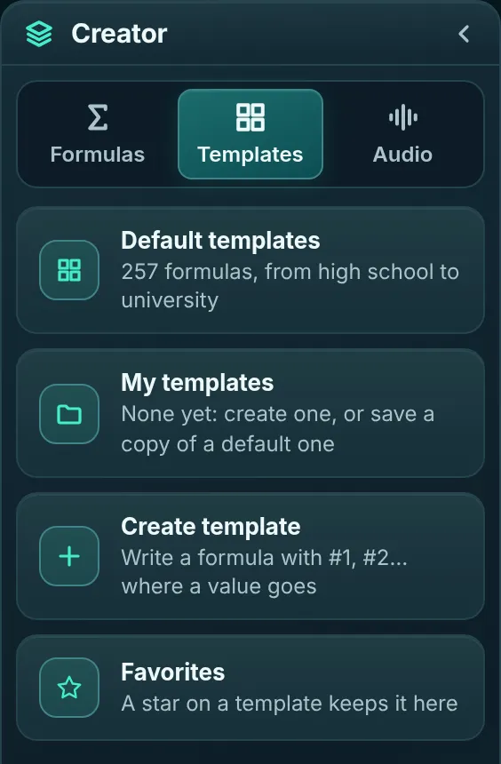
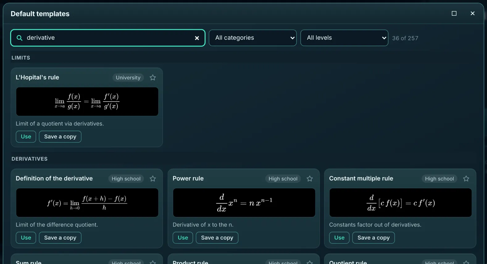
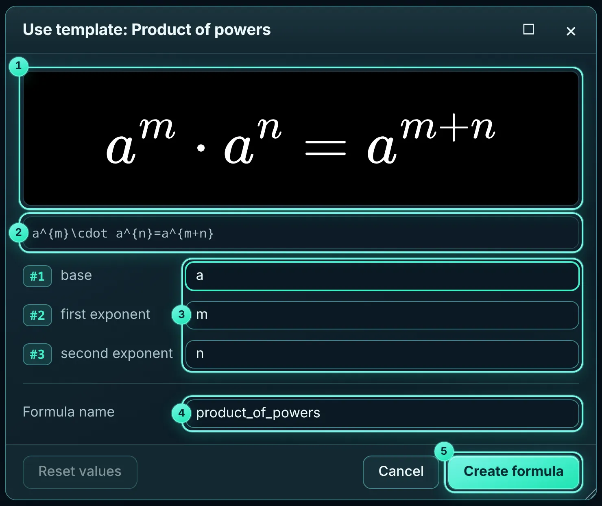
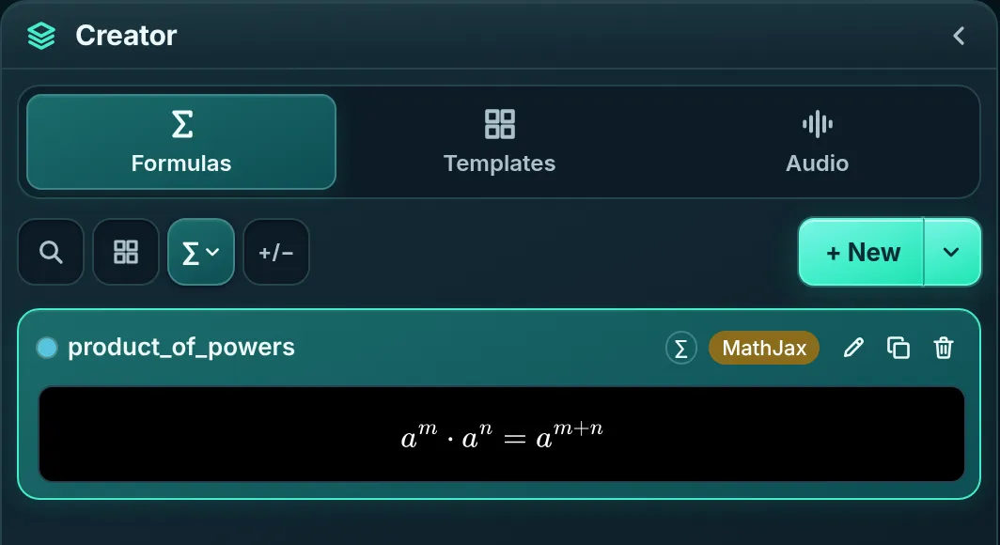
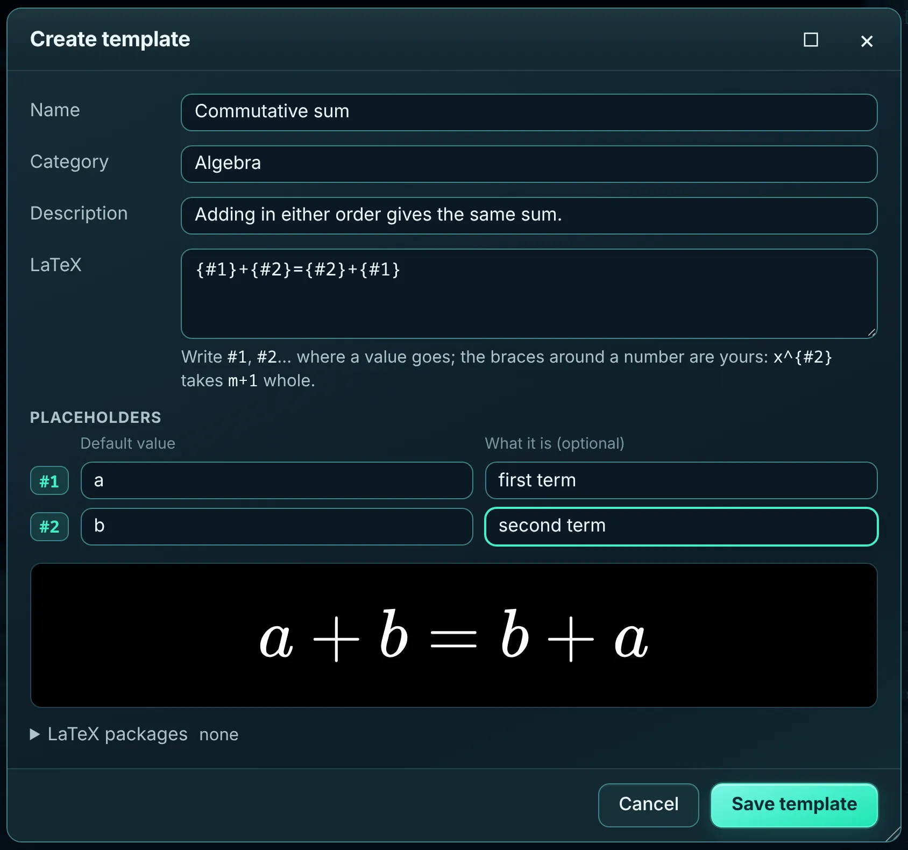
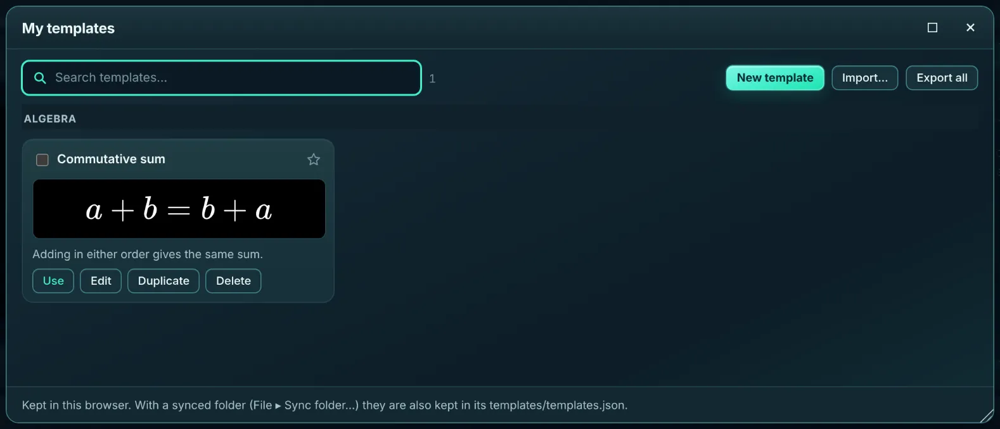
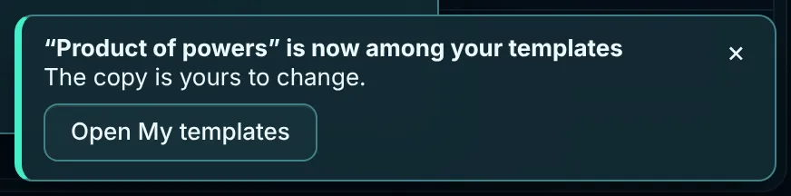
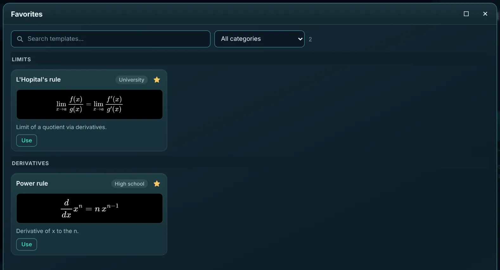

The template library
A template is a formula with blanks. The editor comes with 257 of them, from high-school algebra to university physics: you fill in the blanks, and the formula is in your project. You can write templates of your own, star the ones you reach for most, and take them to another machine.
The template library
The Templates tab is the second tab of the Creator. It has four entries, and each one opens a pop-up.

| Entry | What it opens |
|---|---|
| Default templates | The 257 formulas that come with the editor. |
| My templates | Your own templates, with the buttons to change them. |
| Create template | The form that writes a new template of yours. |
| Favorites | Every template you gave a star, yours and the default ones. |
Default templates
The default library has 257 formulas in 15 categories: Algebra, Functions, Trigonometry, Analytic geometry, Sequences and series, Limits, Derivatives, Integrals, Multivariable calculus, Linear algebra, Differential equations, Complex numbers, Probability and statistics, Sets and logic, and Physics. Each one is marked High school or University.

Along the top of the pop-up are a search field, a category list and a level list, and a count that says N of 257 while they filter the cards. Search takes any number of words, and every word has to appear in the name, the description, the LaTeX or the category of a template. Both lists start at All: type, and the cards narrow at once while the count follows. The cards are grouped under the name of their category.
On each card:
- the name, its level, and a star that keeps it in Favorites;
- the drawing of the formula, with the values the template comes with;
- Use, which is the same as a double-click on the card, and Save a copy, which puts a copy among your own templates (see Your own templates).
The pop-up is resizable, and the search and the filters of each list are still there the next time you open it. In the search field, Esc empties the search first; with nothing to empty, and anywhere else in the pop-up, it closes it.
Using a template
Press Use on a card. What happens next depends on whether the template has blanks, which the editor calls placeholders.
- A template without placeholders, such as Euler's identity, is added to the project at once: no dialog.
- A template with placeholders opens a dialog that asks for their values.

- The drawing shows the formula the values make, and redraws as you type.
- Under it, the LaTeX those values give.
- A field for each placeholder, labelled
#1,#2… and, when the template says what each one is, with its name (base, first exponent). It starts with the template's own value. Type any LaTeX there. - The name the new formula will have. It starts as the template's name made into a
valid one (
product_of_powers), and the rules of names apply. - Create formula adds the formula to the project. Reset values puts back the values the template came with, and Cancel leaves without making anything.
A value that LaTeX cannot draw shows the error under the LaTeX, and Create formula stays off until the value is right. Enter in any field creates the formula, too.
How a value goes into the formula
The template's LaTeX names its blanks #1, #2… and each is replaced by the value
you typed, the way a LaTeX macro takes its arguments. The braces are the template's, not yours, so a
value that is longer than one character stays together:
| Template | Values | Formula |
|---|---|---|
#1^{#2}\cdot #1^{#3}=#1^{#2+#3} |
x, 2k, 3 |
x^{2k}\cdot x^{3}=x^{2k+3} |
Where two pieces would run together (a command followed by a letter, or two braces side by side), the editor puts a space between them, as LaTeX ignores it in maths.
What you get

The formula is an ordinary one: its LaTeX is final, with the values already in it, and nothing remembers that it came from a template. Edit it, rename it or delete it as you would any other (see Writing formulas). Because the LaTeX was final from the start, its glyphs are made once, of what it is, so nothing has to be matched again afterwards.
Your own templates
When you write the same shape of formula again and again, make it a template. Press Create template in the Templates tab, or New template in My templates, and fill in the form.

{#1}+{#2}={#2}+{#1} written: a row for each number, a default value in each, and the drawing the values make.- Name, Category and Description. The category is any name; the list offers the library's and the ones you have used.
- LaTeX: the formula, with
#1,#2… where a value goes. The braces around a number are yours, as in a LaTeX macro:x^{#2}takesm+1whole.\#prints a hash. - Placeholders: a row for every number in the LaTeX, with its Default value and,
optionally, What it is (base, exponent, angle…). A default value is
required. The drawing uses a box
\squarefor a number that has none yet. - LaTeX packages, folded away until you open it, for a template that needs some.
The line beside the buttons tells you what is missing: Give the template a name, Write the LaTeX of the template, Give #1 a default value or the reason the LaTeX cannot be drawn. Save template is off until the form is complete. Take a number out of the LaTeX and write it again, and it comes back with the value and the name it had. Closing a form with something written asks before it throws it away.
My templates

On each card of yours: Use, Edit (the same form, with your template in it), Duplicate and Delete. Deleting asks first, and the button has to be held down. A formula you already made from the template stays. Tick the boxes to pick which templates Export takes.
The default templates cannot be changed. To change one, press Save a copy on its card: a notice says it is now among yours, with a button, Open My templates, and the copy is yours to edit.

Favorites
The star on any card, default or yours, keeps the template in Favorites. That pop-up lists them together, with Mine on the ones you wrote, and press the star again to take one out. Your stars are kept like your templates.

Where your templates are kept
Your templates and your stars belong to the editor, not to a project: they are kept in this browser, like the editor's preferences, so they are there in every project you open in it, and they are not in a project file.
- In the browser. Always. A browser that does not let the editor keep anything says so in the line under My templates; then the templates last until the tab is closed, and Export is how you keep them.
- In a synced folder (Chrome and Edge). After File ▸ Sync folder… the templates are
also written to
templates/templates.jsonin that folder, so they travel with it. The browser asks once for leave to write the folder. The file is read again whenever the folder is listed: of a template changed in two places the one changed last stays, and one deleted in one place and still in the other comes back. A library holds 500 templates. When the file and the browser have more than that together, or the file has entries that are not templates, the editor never writes the file again with less than it holds: it leaves it as it is, and the line under the list says what to do, such as deleting some templates here or in the file and listing the folder again. - As a file. Export all downloads your templates and favorites as
mfe-templates.json, or Export N selected the ticked ones. Import… reads such a file. When a template of the file is one of yours with other content, a question asks: Replace mine, Keep both or Keep mine.
The line under the list says which of these is in force, and offers Try again or Write to the folder when the folder could not be written.
Where to go next
- Writing formulas: edit what a template made.
- Finding and organizing: search, group and tidy your formulas.
- Projects and files: the Sync folder.